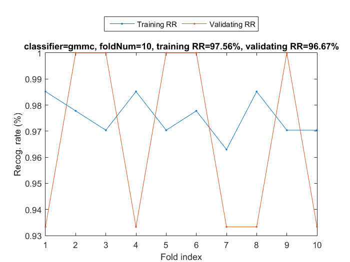
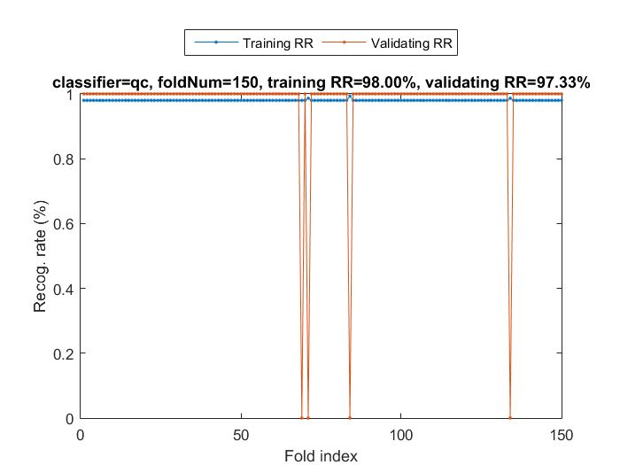

crossValidate
Cross validation for classifier performance evaluation
Contents
Syntax
- [tRrMean, vRrMean, tRr, vRr]=crossValidate(DS, cvPrm, showPlot)
Description
[tRrMean, vRrMean, tRr, vRr]=crossValidate(DS, cvPrm) generates a classifier's performance based on m-fold cross validation.
- DS: dataset
- cvPrm: The parameters for cross validation
- cvPrm.foldNum: The number of folds for CV. If this number is larger than the number of data instances in DS, then the leave-one-out method is used for CV.
- cvPrm.classifier: The classifier used for CV
- cvPrm.cPrm: The parameters of the classifier cvPrm.classifier. (If this field does not exist, or if the field value is empty, it indicates the use of the default classifier parameters.)
- tRrMean: Mean value of the training recognition rate
- vRrMean: Mean value of the validating recognition rate
- tRr: Training recognition rate for each fold
- vRr: Validating recognition rate for each fold
Example
10-fold cross-validation of Iris dataset using GMMC
DS=prData('iris'); cvPrm=crossValidate('defaultOpt'); cvPrm.foldNum=10; cvPrm.classifier='gmmc'; % GMM-based classifier showPlot=1; figure; [tRrMean, vRrMean, tRr, vRr]=crossValidate(DS, cvPrm, showPlot);
Fold = 1/10 Fold = 2/10 Fold = 3/10 Fold = 4/10 Fold = 5/10 Fold = 6/10 Fold = 7/10 Fold = 8/10 Fold = 9/10 Fold = 10/10 Training RR=97.56%, Validating RR=96.67%, classifier=gmmc, no. of folds=10
Leave-one-out test of Iris dataset using QC
DS=prData('iris'); cvPrm=crossValidate('defaultOpt'); cvPrm.foldNum=inf; cvPrm.classifier='qc'; % Quadratic classifier showPlot=1; figure; [tRrMean, vRrMean, tRr, vRr]=crossValidate(DS, cvPrm, showPlot);
Fold = 15/150 Fold = 30/150 Fold = 45/150 Fold = 60/150 Fold = 75/150 Fold = 90/150 Fold = 105/150 Fold = 120/150 Fold = 135/150 Fold = 150/150 Training RR=98.00%, Validating RR=97.33%, classifier=qc, no. of folds=150